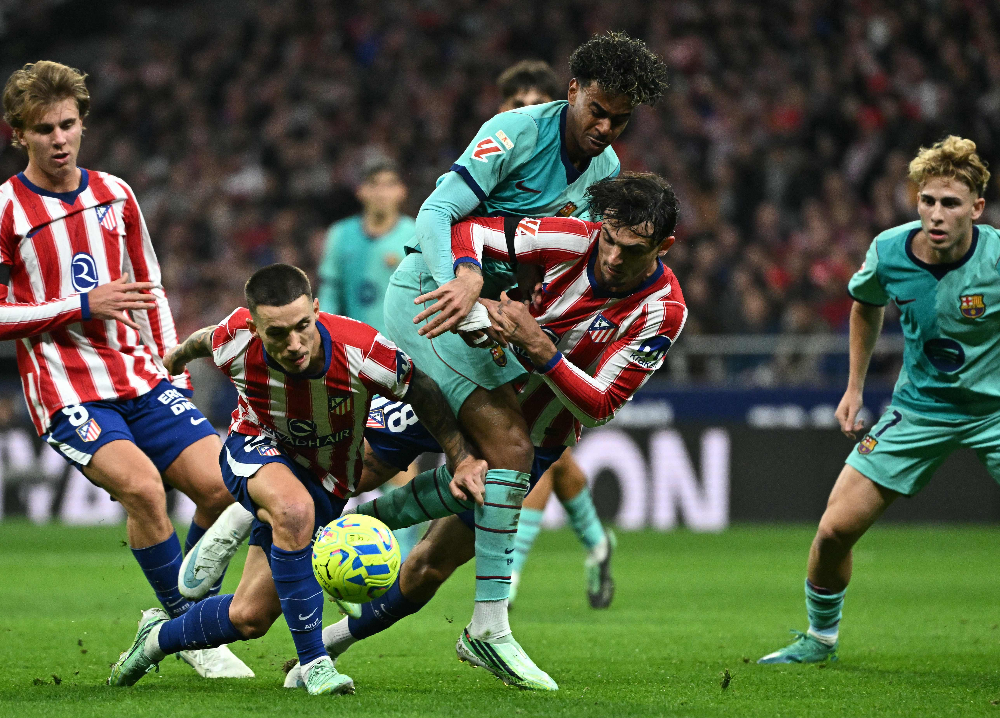
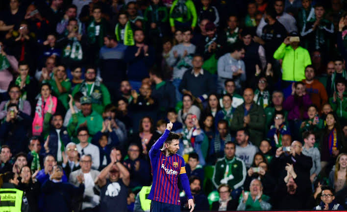
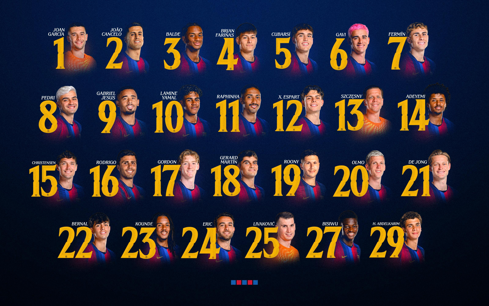

Actualidad y Noticias

Mantente al día con la actualidad del equipo, los últimos fichajes y las crónicas detalladas de los partidos disputados esta semana.
Leer las últimas noticias en nuestro Blog
La web Universo Blaugrana es el espacio definitivo para los verdaderos aficionados
del FC Barcelona. Aquí encontrarás la actualidad del equipo, historia, análisis de partidos y mucho
más sobre nuestro club.
En este espacio podrás seguir de cerca el rendimiento del primer equipo
en las distintas competiciones, repasar los momentos más emblemáticos que han marcado la identidad
de la entidad y consultar estadísticas actualizadas. Explora nuestras secciones a través del menú de
navegación o mediante las previsualizaciones que encontrarás a continuación.

Mantente al día con la actualidad del equipo, los últimos fichajes y las crónicas detalladas de los partidos disputados esta semana.
Leer las últimas noticias en nuestro Blog
Revive las noches mágicas de Champions y los títulos inolvidables a través de nuestra selección fotográfica del club.
Ver fotografías en la Galería de leyendas
Comprueba todas las estadisticas y analiza los datos y resultados de la temporada en curso.
Consultar la tabla de clasificación actual